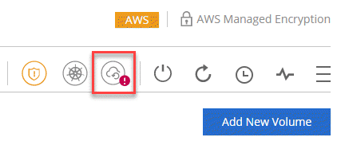
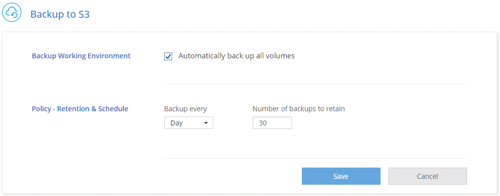
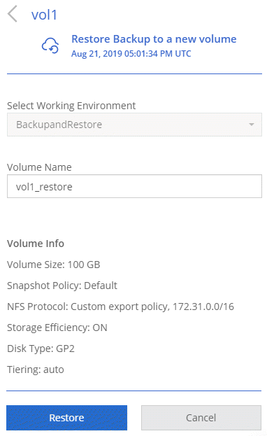

문서 변경 요청
문서 변경 요청 이 페이지 편집
이 페이지 편집 기여하는 방법 자세히 알아보기
기여하는 방법 자세히 알아보기Amazon S3에 데이터 백업
S3에 백업하는 Cloud Volumes ONTAP의 애드온 기능으로, 클라우드 데이터를 보호하기 위해 완벽하게 관리되는 백업 및 복원 기능과 장기적인 아카이브를 제공합니다. 백업은 단기 복구 또는 클론 복제에 사용되는 볼륨 Snapshot 복사본과 관계없이 S3 오브젝트 스토리지에 저장됩니다.
S3로 백업을 설정하면 서비스가 데이터의 전체 백업을 수행합니다. 모든 추가 백업은 증분 백업이므로 변경된 블록과 새 블록만 백업됩니다.
모든 백업 및 복원 작업에 Cloud Manager를 사용해야 합니다. ONTAP 또는 Amazon S3에서 직접 수행한 작업은 지원되지 않는 구성을 만듭니다.
빠른 시작
다음 단계를 따라 빠르게 시작하거나 나머지 섹션으로 스크롤하여 자세한 내용을 확인하십시오.
구성에 대한 지원을 확인합니다
다음을 확인합니다.
-
Cloud Volumes ONTAP 9.4 이상이 지원되는 AWS 지역에서 실행 중입니다 버지니아, 오리건, 아일랜드, 프랑크푸르트 또는 시드니
-
새 에 가입했습니다 "Cloud Manager Marketplace 오퍼링"
-
TCP 포트 5010은 Cloud Volumes ONTAP의 보안 그룹에서 아웃바운드 트래픽에 대해 열려 있습니다(기본적으로 열림).
-
TCP 포트 8088은 Cloud Manager의 보안 그룹에서 아웃바운드 트래픽에 대해 열려 있습니다(기본적으로 열림).
-
Cloud Manager에서 다음 엔드포인트를 액세스할 수 있습니다.
-
Cloud Manager를 사용하여 VPC에서 최대 2개의 인터페이스 VPC 엔드포인트를 할당할 수 있습니다(VPC당 AWS 제한은 20).
-
Cloud Manager에는 최신 에 나열된 VPC 엔드포인트 권한을 사용할 수 있는 권한이 있습니다 "Cloud Manager 정책":
"ec2:DescribeVpcEndpoints", "ec2:CreateVpcEndpoint", "ec2:ModifyVpcEndpoint", "ec2:DeleteVpcEndpoints"
새 시스템이나 기존 시스템에서 S3로 백업을 활성화합니다
-
새 시스템: 작업 환경 마법사에서 S3로 백업 기능이 기본적으로 활성화됩니다. 옵션을 활성 상태로 유지해야 합니다.
-
기존 시스템: 작업 환경을 열고 백업 설정 아이콘을 클릭한 다음 백업을 활성화합니다.

필요한 경우 백업 정책을 수정합니다
기본 정책은 매일 볼륨을 백업하고 각 볼륨의 백업 복사본을 30개 보존합니다. 필요한 경우 보존할 백업 복사본 수를 변경할 수 있습니다.

필요에 따라 데이터를 복원합니다
Cloud Manager 맨 위에서 * 백업 및 복원 * 을 클릭하고 볼륨을 선택한 다음 백업을 선택하고 백업에서 새 볼륨으로 데이터를 복원합니다.

요구 사항
S3에 볼륨을 백업하기 전에 다음 요구 사항을 읽고 지원되는 구성이 있는지 확인합니다.
- 지원되는 ONTAP 버전
-
S3에 대한 백업은 Cloud Volume ONTAP 9.4 이상에서 지원됩니다.
- 지원되는 AWS 영역
-
S3로 백업하는 기능은 다음 AWS 지역에서 Cloud Volumes ONTAP를 통해 지원됩니다.
-
미국 동부(N. 버지니아)
-
미국 서부(오리건주)
-
EU(아일랜드)
-
EU(프랑크푸르트)
-
아시아 태평양(시드니)
-
- AWS 권한이 필요합니다
-
Cloud Manager에 권한을 제공하는 IAM 역할에는 다음이 포함되어야 합니다.
"ec2:DescribeVpcEndpoints", "ec2:CreateVpcEndpoint", "ec2:ModifyVpcEndpoint", "ec2:DeleteVpcEndpoints" - AWS 구독 요구사항
-
3.7.3 릴리스부터 AWS 마켓플레이스에서 새로운 Cloud Manager 구독을 지원합니다. 이 구독을 통해 Cloud Volumes ONTAP 9.6 이상 PAYGO 시스템 및 Backup to S3 기능을 배포할 수 있습니다. 다음 작업을 수행해야 합니다 "이 새로운 Cloud Manager 구독을 신청하십시오" S3로 백업을 사용하도록 설정하기 전에 S3로 백업 기능에 대한 청구는 이 구독을 통해 이루어집니다.
- 포트 요구 사항
-
-
TCP 포트 5010은 Cloud Volumes ONTAP에서 백업 서비스로 나가는 아웃바운드 트래픽에 대해 열려 있어야 합니다.
-
TCP 포트 8088은 Cloud Manager의 보안 그룹에서 아웃바운드 트래픽에 대해 열려 있어야 합니다.
이러한 포트는 미리 정의된 보안 그룹을 사용한 경우 이미 열려 있습니다. 하지만 직접 사용하는 경우에는 이러한 포트를 열어야 합니다.
-
- 아웃바운드 인터넷 액세스
-
Cloud Manager:\https://w86yt021u5.execute-api.us-east-1.amazonaws.com/production/whitelist 에서 다음 끝점에 액세스할 수 있는지 확인합니다
Cloud Manager가 이 엔드포인트에 접속하여 AWS 계정 ID를 S3에 백업할 수 있는 허용된 사용자 목록에 추가합니다.
- 인터페이스 VPC 엔드포인트
-
S3 백업 기능을 활성화하면 Cloud Manager가 Cloud Volumes ONTAP가 실행 중인 VPC에 VPC 엔드포인트를 생성합니다. 이 _backup 끝점은 S3에 백업이 실행 중인 NetApp VPC에 연결됩니다. 볼륨을 복원하는 경우 Cloud Manager에서 VPC 엔드포인트, 즉 _restore endpoint_를 추가로 생성합니다.
VPC에 추가 Cloud Volumes ONTAP 시스템은 VPC 엔드포인트 2개를 사용합니다.
"인터페이스 VPC 엔드포인트의 기본 제한은 VPC당 20개입니다". 이 기능을 활성화하기 전에 VPC가 한계에 도달하지 않았는지 확인하십시오.
새 시스템에서 S3로 백업 설정
작업 환경 마법사에서 S3로 백업 기능은 기본적으로 사용하도록 설정됩니다. 옵션을 활성 상태로 유지해야 합니다.
-
Create Cloud Volumes ONTAP * 를 클릭합니다.
-
클라우드 공급자로 Amazon Web Services를 선택하고 단일 노드 또는 HA 시스템을 선택합니다.
-
세부 정보 및 자격 증명 페이지를 입력합니다.
-
S3 백업 페이지에서 기능을 활성화된 상태로 두고 * 계속 * 을 클릭합니다.

-
마법사의 페이지를 완료하여 시스템을 구축합니다.
시스템에서 S3 백업 기능을 활성화하고 매일 볼륨을 백업하고 30개의 백업 복사본을 유지합니다. 백업 보존을 수정하는 방법에 대해 알아봅니다.
기존 시스템에서 S3로 백업 설정
지원되는 구성을 실행 중인 경우 기존 Cloud Volumes ONTAP 시스템에서 S3로 백업을 설정할 수 있습니다. 자세한 내용은 을 참조하십시오 [Requirements].
-
작업 환경을 엽니다.
-
백업 설정 아이콘을 클릭합니다.
-
모든 볼륨 자동 백업 * 을 선택합니다.
-
백업 보존을 선택한 다음 * Save * 를 클릭합니다.
S3로 백업 기능은 각 볼륨의 초기 백업을 수행하기 시작합니다.
백업 보존 변경
기본 정책은 매일 볼륨을 백업하고 각 볼륨의 백업 복사본을 30개 보존합니다. 보존할 백업 복사본 수를 변경할 수 있습니다.
-
작업 환경을 엽니다.
-
백업 설정 아이콘을 클릭합니다.
-
백업 보존 기간을 변경한 다음 * Save * 를 클릭합니다.
볼륨을 복원하는 중입니다
백업에서 데이터를 복구할 때 Cloud Manager는 _new_volume에 대한 전체 볼륨 복원을 수행합니다. 동일한 작업 환경 또는 다른 작업 환경으로 데이터를 복원할 수 있습니다.
-
Cloud Manager 맨 위에서 * 백업 및 복원 * 을 클릭합니다.
-
복원할 볼륨을 선택합니다.

-
복원할 백업을 찾고 복원 아이콘을 클릭합니다.

-
볼륨을 복원할 작업 환경을 선택합니다.
-
볼륨의 이름을 입력합니다.
-
복원 * 을 클릭합니다.

백업을 삭제하는 중입니다
모든 백업은 Cloud Manager에서 삭제할 때까지 S3에 유지됩니다. 볼륨을 삭제하거나 Cloud Volumes ONTAP 시스템을 삭제해도 백업이 삭제되지 않습니다.
-
Cloud Manager 맨 위에서 * 백업 및 복원 * 을 클릭합니다.
-
볼륨을 선택합니다.
-
삭제할 백업을 찾고 삭제 아이콘을 클릭합니다.

-
백업을 삭제할 것인지 확인합니다.
S3로 백업 해제
S3로 백업을 비활성화하면 시스템에 있는 각 볼륨의 백업이 비활성화됩니다. 기존 백업은 삭제되지 않습니다.
-
작업 환경을 엽니다.
-
백업 설정 아이콘을 클릭합니다.
-
모든 볼륨 자동 백업 * 을 비활성화 * 한 다음 * 저장 * 을 클릭합니다.
S3로 백업 작동 방식
다음 섹션에서는 S3로 백업 기능에 대한 자세한 정보를 제공합니다.
백업이 상주하는 위치입니다
백업 복사본은 Cloud Volumes ONTAP 시스템이 있는 동일한 영역의 NetApp 소유 S3 버킷에 저장됩니다.
백업은 증분 백업입니다
데이터의 초기 전체 백업 후에는 모든 추가 백업이 증분 백업되므로 변경된 블록과 새 블록만 백업됩니다.
백업은 자정에 수행됩니다
매일 백업은 매일 자정 직후에 시작됩니다. 현재 사용자가 지정한 시간에 백업 작업을 예약할 수 없습니다.
백업 복사본은 Cloud Central 계정과 연결됩니다
백업 복사본은 와 연결됩니다 "Cloud Central 계정" Cloud Manager가 상주하는 위치
동일한 Cloud Central 계정에 여러 Cloud Manager 시스템이 있는 경우 각 Cloud Manager 시스템에 동일한 백업 목록이 표시됩니다. 여기에는 다른 Cloud Manager 시스템의 Cloud Volumes ONTAP 인스턴스와 연관된 백업이 포함됩니다.
백업 정책은 시스템 전체에 적용됩니다
보존할 백업 수는 시스템 레벨에서 정의됩니다. 시스템의 각 볼륨에 대해 다른 정책을 설정할 수 없습니다.
보안
사용 중인 AES-256비트 암호화 유휴 및 TLS 1.2 HTTPS 연결로 백업 데이터를 보호합니다.
데이터는 보안 Direct Connect 링크를 통해 서비스에 전송되며 AES 256비트 암호화로 유휴 보호됩니다. 그런 다음 HTTPS TLS 1.2 연결을 사용하여 암호화된 데이터를 클라우드에 씁니다. 또한 데이터는 보안 VPC 엔드포인트 연결을 통해서만 Amazon S3로 이동하므로 인터넷을 통해 트래픽이 전송되지 않습니다.
각 사용자에게는 서비스가 소유하는 전체 암호화 키 외에도 테넌트 키가 할당됩니다. 이 요구 사항은 은행에서 고객의 안전을 위해 키 쌍이 필요한 경우와 유사합니다. 모든 키는 클라우드 자격 증명으로 안전하게 보관되며 서비스 유지 관리를 담당하는 특정 NetApp 직원만 사용할 수 있습니다.
제한 사항
-
다음 인스턴스 유형 중 하나를 사용하는 경우 Cloud Volumes ONTAP 시스템은 최대 20개의 볼륨을 S3에 백업할 수 있습니다.
-
M4.xLarge
-
m5.xlarge
-
R4.xLarge
-
R5.xLarge
-
-
Cloud Manager 외부에서 생성한 볼륨은 S3에 자동으로 백업되지 않습니다.
예를 들어, ONTAP CLI, ONTAP API 또는 System Manager에서 볼륨을 생성하는 경우 볼륨이 자동으로 백업되지 않습니다.
이러한 볼륨을 백업하려면 S3로 백업을 비활성화한 다음 다시 활성화해야 합니다.
-
백업에서 데이터를 복구할 때 Cloud Manager는 _new_volume에 대한 전체 볼륨 복원을 수행합니다. 이 새 볼륨은 S3에 자동으로 백업되지 않습니다.
복원 작업에서 생성된 볼륨을 백업하려면 S3로 백업을 비활성화한 다음 다시 활성화해야 합니다.
-
크기가 50TB 이하인 볼륨을 백업할 수 있습니다.
-
S3로 백업하면 최대 245개의 볼륨 전체 백업을 유지할 수 있습니다.
-
WORM 스토리지는 S3에 대한 백업이 활성화된 경우 Cloud Volumes ONTAP 시스템에서 지원되지 않습니다.